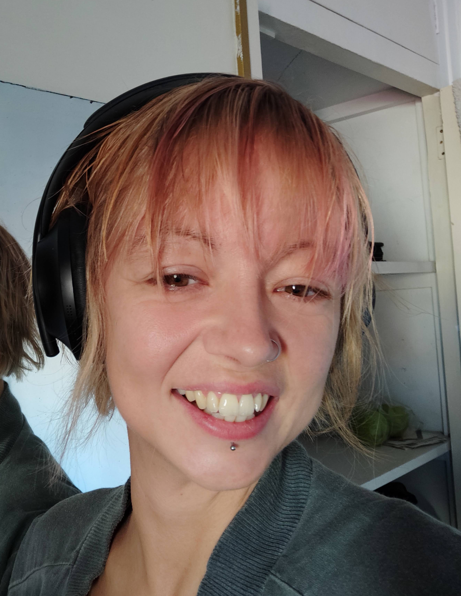

Mitt namn är Frida Persson. Född och uppvuxen i Himle, Halland, strax utanför Varberg. När jag var sjutton år så valde jag att göra ett utbytesår i Norra Kalifornien, och sedan dess så har jag dedikerat mitt liv till att resa. Dem senaste tolv åren så har Barcelona, Spanien varit min bas, även ifall jag inte bott där på heltid, så är det alltid den staden som jag återvänt till efter mina resor över världen.
Programmering har alltid intresserat mig, då det en gång i tiden fanns ett web community som startade i Varberg, Lunarstorm. Min mamma kodade i flash på den tiden, och var en kort tid praktikant hos dem. Sedan dess har jag alltid velat lära mig att programmera men det är först nu som jag kan dedicera all min tid åt det.
Om jag skall nämna någon hobby, förutom webbprogrammering, så får det bli att lyssna på rock/metal och göra yoga. Har även en stor kärlek till havet, speciellt att snorkla.
Ser verkligen framemot att få lära mig mer inom webbutveckling, och kanske hitta den nisch där jag skulle vilja jobba. Det lilla som jag kan hittills är en salig blandning utav full stack teknologier.